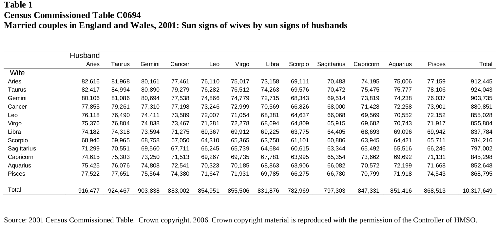

References
- voasastrology.pdf: Ten million marriages: A test of astrological ‘love signs’, a presentation of this study by David Voas, 2007.
- Love not in the stars, a presentation of the study on Manchester University web site.
Data
Information about data can be found in voasastrology.pdf

Other tables are shown:
| Voas table | Census table | Description | Total claimed |
|---|---|---|---|
| 1 | C0694 |
Married couples in England and Wales, 2001
Sun signs of wives by sun signs of husbands |
10,317,649 |
| 3 | C0792 |
Married couples in England and Wales, 2001
Month of birth of wives by month of birth of husbands |
10,317,673 |
| 6 | C0792 | Married couples in England and Wales, 2001 (excluding those with day of birth for one spouse or both recorded as the 1st)
Sun signs of wives by sun signs of husbands |
9,518,979 |
| 7 | C0792 |
Married couples in England and Wales, 2001 (excluding those with day of birth for one spouse or both recorded as the 1st and deducting same-sign excess)
Sun signs of wives by sun signs of husbands |
9,500,773 |